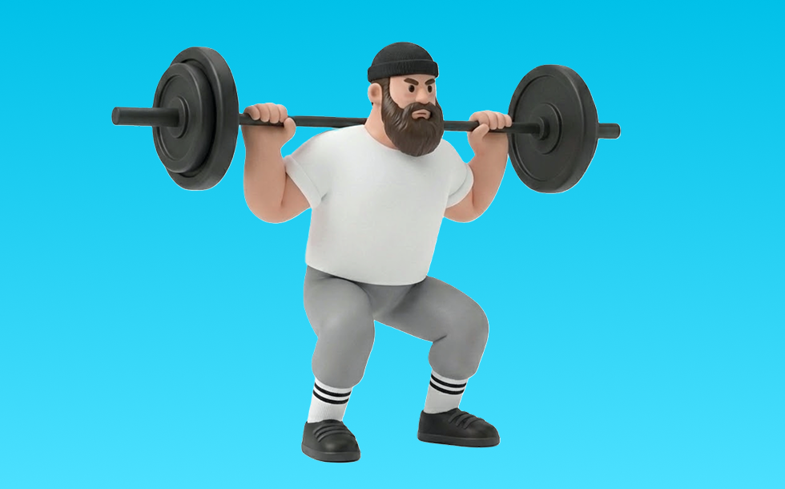

バーベルスクワット（バック）

バーベルスクワット（バック）とは、バーベルを使って「しゃがんで立つ」動作で脚（大腿四頭筋、臀筋）＋体幹を鍛える種目です。高重量を扱いやすく、筋力を伸ばしやすいのが特徴で、背すじを保ってしゃがみ、足で床を押して立ち上がる動作を繰り返します。下半身の筋力・筋量アップが期待できます。
- 対象部位
- 脚
- 器具
- バーベル
- 記録形式
- 重量・回数
- 別名
- スクワット / バックスクワット
YouTube動画
-
【解説】正しいハイバー・ローバースクワットのやり方【筋トレ】
-
【最強の筋トレ】スクワットのやり方。フォーム・足幅・深さなどで効果は変わるのか？
-
【初心者】バーベルスクワットの正しいやり方【フォーム解説】
-
【筋トレ悪いフォーム解説】スクワットで怪我をしないために、ヒンジ動作を習得しよう！
-
【解説】ハイバースクワットの正しいやり方【BIG3】
-
【スクワット】そのフォーム間違ってます！世界チャンプが教える正しい筋トレ
-
【筋トレ】バーベルを使ったトレーニングの王様「スクワット」～パワーラックの使い方～
-
【有料級】スクワット迷子は全員観てください。世界３位の牛山選手にめちゃくちゃわかりやすいコツを教えてもらいました！パワーチューブコラボ
-
【ボディビル日本一が完全解説】脚トレには絶対欠かせないキングオブエクササイズ!! スクワットの教科書
-
バーベルスクワットのやり方｜正しいフォームを解説
-
【永久保存版】基礎から徹底解説！脚トレの王様「スクワットの教科書」
-
【筋トレ】世界王者パワーリフターが教えるスクワットが有料級すぎた
-
【藤井と師匠実技】ボディビル界随一のハムケツ！バーベルスクワットのフォームとコツ 【新・バズーカ岡田チャンネル】 #バズーカ岡田
-
【バーベルスクワット】足幅は？ローバー、ハイバーどっち？細かいところを徹底解説していきます
-
【ハイバーとローバーの正しいフォーム】自重スクワットとバーのセット方法も♪
-
スクワット初心者はこれを最初に観て欲しい。バーベルスクワットの教科書【パワーチューブウッシーコラボ】
-
【スクワット】2022年版！最速でわかる怪我しない正しいフォームを身につける方法！
-
バーベルスクワットの効果的なやり方！大腿四頭筋に効くフォームの3つのポイント解説＆実演
-
ジュラシック木澤×横川尚隆 これが日本トップのスクワット！！
-
【保存版】バーベルスクワットのやり方【ジム初心者向け】
-
バーベルスクワットの正しいやり方。太ももと背中を鍛えて代謝アップ（3分）
-
2026年から始める‼︎初心者にスクワットをわかりやすく解説！
-
バックスクワットのやり方（バーベルを使って下半身を鍛える方法）／筋トレ実践講座
-
【初心者は絶対に見るべき】スクワットでやりがちな10個の大間違い
-
前もも張らない！すっきり脚をつくるスクワット＆ブルガリアンスクワットはこうやって💪
-
【筋トレ】スクワットでこれをやってしまっている人は本当に気をつけてください
-
【初心者向けビッグ3解説】スクワットの基本をプロボディビルダーが超丁寧に教える動画
-
【それNGです】スクワット：6つのエラー動作と改善方法
-
【筋トレ初心者から熟練者まで】最強種目！バーベル・スクワットを解説【佐野市の24時間ジム：AEGYM】
-
【自宅筋トレ】なかやまきんに君の正しいスクワットを学ぼう。
YouTubeショート
-
正しいローバースクワットのやり方！フォーム解説！
-
正しいスクワットのやり方！フォーム解説！
-
「最高のスクワット」3つの絶対原則#スクワット #筋トレ #筋肉 #トレーニング #ジム #健康クリエイターshota
-
【ハイバースクワット】怪我なく脚を鍛える正しいフォーム解説
-
バーベルスクワットをやる必要がない理由 #筋肥大#脚トレ#フィットネス
-
こんなスクワットはやめましょう #フィットネス #筋トレ #スクワット
-
【SGIR】バーベルスクワットは必ずしも必要ではない！好きな種目をやろう❗️
-
正しいスクワットのフォーム
-
スクワットの準備方法 #初心者 #ジム #スクワット
-
【筋トレ】山本義徳先生がスクワットを実演！
-
スクワットのフォームが美しすぎる…
-
【筋トレ_脚】#shorts #筋トレ #スクワット #100kg
-
バーベルスクワットのフォームとコツを伝授！ #バーベルスクワット
-
バーベルスクワット辞めて！
-
スクワットの重量が伸びる方法！立ち上がり方！
-
フロントスクワット 140キロ
動作方法
- 足幅を決め、体幹を固める
- 股関節と膝を同時に曲げて下ろす
- 足裏全体で床を押して立ち上がる
動作ポイント
- 膝とつま先の向きをそろえる
- 胸を落としすぎない
- かかとを浮かせない
ワンポイントアドバイス
- ウォームアップで股関節と足首を動かす
- 高重量の日はセーフティ設定を確認する
目的別回数設定
目的や体力に応じた一般的な目安です。無理のない範囲で調整してください。
- 筋力アップ
- 1〜5回
- 筋肥大
- 6〜12回
- 持久力アップ
- 13〜20回
YouTube動画について
動画はYouTubeの公開情報をもとに表示しています。内容は投稿者によるもので、Biggrによる監修ではありません。
アプリを入手
筋トレやトレーニングの記録はBiggrにお任せください。今すぐ無料で使い始められます。